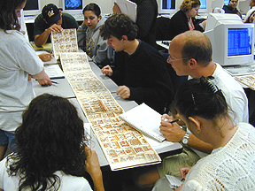
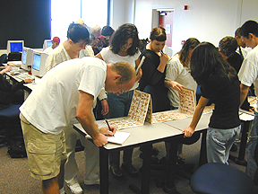

The Codex lab provides a forum for
the interpretation of the material culture of an alien civilization.
The codices used are photographic
reproductions of pre-Columbian manuscripts produced by ancient Native Americans.

Here students in SBSC 224s/324s
study the imagery and material culture of ancient pre-Aztec peoples of
highland Mesoamerica.
The objective of the this lab is
to introduce students to those strategies that enable the interpretation
of alien material cultures.
Photos copyright Ruben G. Mendoza,
2000.